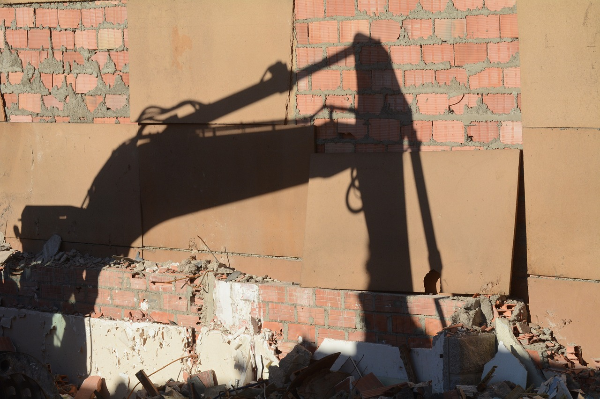
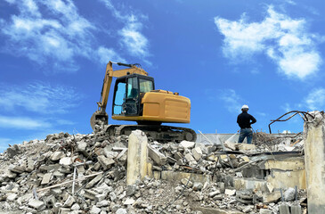
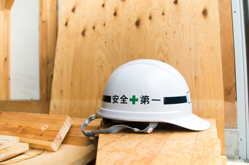

会社概要
- 社名：株式会社 ミヨシ
- 設立：平成29年2月1日
- 代表者：代表取締役 茂木 丈史(もてぎ たけし)
- 事業内容：産業廃棄物収集運搬、解体業
- 所在地：〒379-2203
群馬県伊勢崎市曲沢町1234
- 許認可：
解体業、群馬県知事許可(般-04)第25414号
産業廃棄物収集運搬業許可
・群馬県知事 01000194431
・埼玉県知事 01100194431
・栃木県知事 00900194431
保有資格
| 解体工事施工技士 | 1名 |
| 建築物石綿含有調査者 | 3名 |
| 石綿作業主任者 | 4名 |
| コンクリート造工作物の解体等作業主任者 | 2名 |
| 足場組み立て等作業主任者 | 2名 |
| 建築物等の鉄骨の組み立て等作業主任者 | 2名 |
| 地山掘削及び土止め支保工作業主任者 | 1名 |
| 群馬県フロン回収技術者 | 2名 |
| 車両系建設機械｢整地等｣運転 | 2名 |
| 車両系建設機械｢解体｣ | 2名 |
| 車両系建設機械｢解体用｣第1種特例 | 1名 |
| 玉掛け | 2名 |
| 小型移動式クレーン | 2名 |
| 高所作業車運転 | 2名 |
| フォークリフト運転 | 2名 |
| ガス溶接 | 2名 |
| 締め固め用機械 | 1名 |
| 自由研削用砥石の取り替え | 3名 |
| 伐木等の業務 | 3名 |
| フルハーネス墜落制止用器具 | 3名 |
| 足場の組み立て等の業務 | 2名 |
| 石綿等使用建築物の解体 | 1名 |
| 丸のこ等取り扱い従事者 | 2名 |
| 刈払機取り扱い作業者 | 2名 |
| 木造建築物解体指揮者 | 2名 |
| 振動工具取扱作業車 | 2名 |
| 職長・安全衛生責任者 | 1名 |
| 熱中症予防教育 | 1名 |



